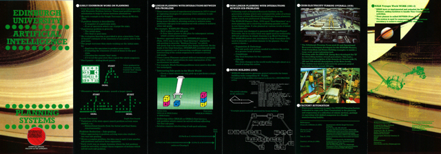

Austin Tate's Nonlin Planning System
The Nonlin hierarchical partial-order AI planning system, developed by
Austin Tate at the
University of Edinburgh, is available in a downloadable
form here: http://www.aiai.ed.ac.uk/project/nonlin/, a
browsable from here: here or
http://www.cs.bham.ac.uk/research/poplog/nonlin
thanks to Aaron Sloman at the University of Birmingham for encouraging
Austin to make it it run as it used to in a much earlier version of
Poplog, so that it works in both Windows Poplog and Linux/Unix Poplog.
Get a copy of the freely distributable version of Poplog at
http://www.cs.bham.ac.uk/research/poplog/freepoplog.html
[PC/Windows version 15.5 is available locally here -
note this version is only for a 32 bit Windows OS].
Unpack the files to a temporary location and run "SETUP.EXE". It may
be best to allow the installer to place the files in the default
sugegsted position to avoid any problems with spaces in directory
names. You can then run Poplog POP-11 in a Window
via the "Pop-11" shortcut created.
Fetch the nonlin.zip file and unzip it in
any directory you wish to use to try it out.
Documentation
Some information on getting Nonlin
up and running in recent versions of Poplog are in the
readme.txt. Help to run the program is
available in the on-line instructions.
Further information, including sample problem domain definitions using
the Nonlin task formalism (TF) can be found in the release zip file or
can be browsed on-line here.
A short video demonstration of Nonlin is available
here.
Reference/Citations
Tate, A. (1976) "Project Planning Using a Hierarchic Non-linear
Planner", D.A.I. Research Report No. 25, August 1976, Department of
Artificial Intelligence, University of Edinburgh.
[ PDF Format (6.75MB) ]
A review of this paper on Nonlin by Subbarao Kambhampati in 2002 is
available here.
Tate, A. (1977) "Generating Project Networks", Proceedings of the
Fifth International Joint Conference on Artificial Intelligence
(IJCAI-77) pp. 888-893, Boston, Mass. USA, August 1977. Reprinted in
"Readings in Planning" (eds. Allen, J., Hendler, J. and Tate, A.),
Morgan-Kaufmann, 1990.
[ PDF Format
(1.5MB) ]
A note by Austin Tate, written on 9-Jan-2008,
on choice ordering mechanisms and heuristic search in
Nonlin, O-Plan and I-X/I-Plan is available
here.
Edinburgh University - Artificial Intelligence - Planning Systems

A leaflet describing applications of Nonlin and AI Planning work at
Edinburgh's Planning Group, published in 1983, is available in
PDF Format (2.5MB) and
as a JPG Image (4.2MB)
UM Nonlin
The University of Maryland produced a Common Lisp version of some
core parts of the Nonlin planner incorporating its hierarchical
partial order approach to planning. See
http://www.cs.umd.edu/projects/plus/Nonlin/
for more details and to download that version.
Brian Drabble's Ph.D project Excalibur planner was based on Nonlin and
linked HTN planning methods with qualitative process reasoning.
More details available on the
Excalibur Planner
Web Page
POP-2 Documentation and Manuals
Documentation and manuals for the original POP-2 system can be found here:
http://www.cs.otago.ac.nz/staffpriv/ok/pop2.htm.
Copyright
Nonlin is subject to the "Copyright Notice for Poplog and Associated Files
and Packages" available at
http://www.cs.bham.ac.uk/research/poplog/copyright.html [also locally available
here].
{kind=link}